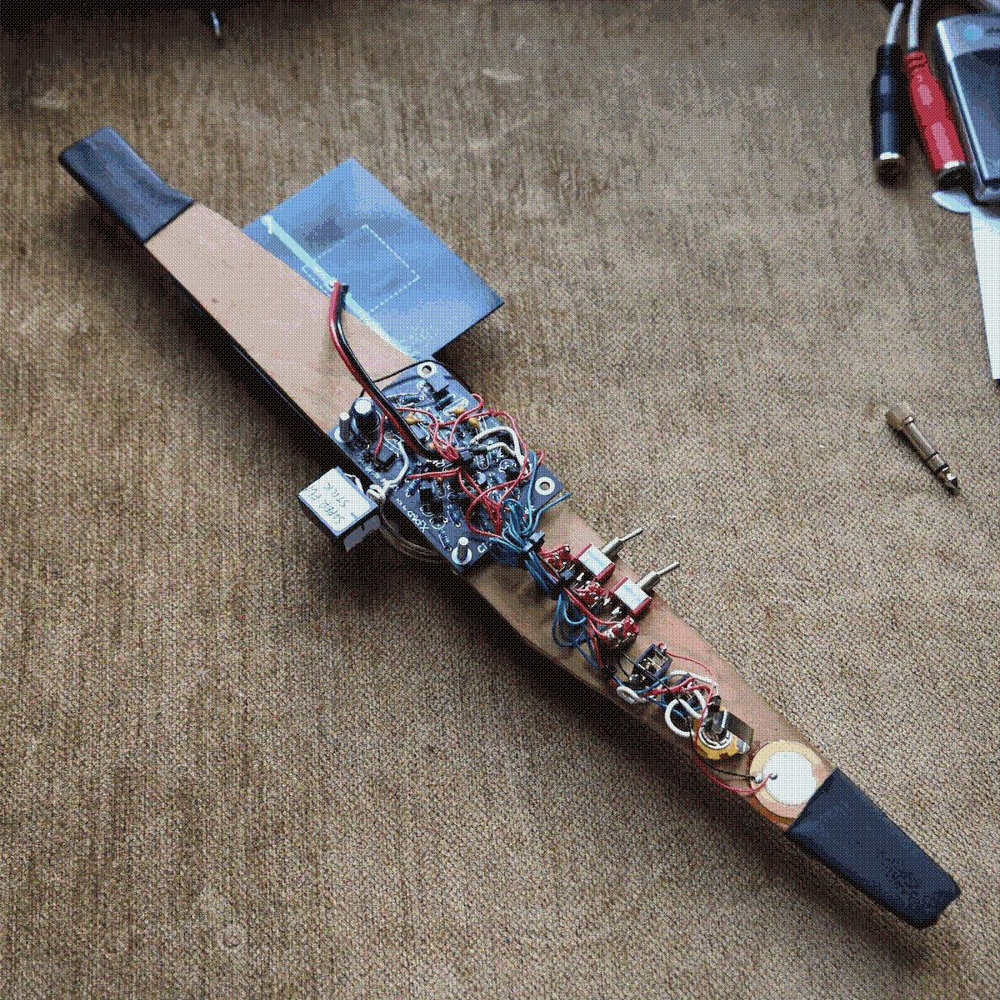
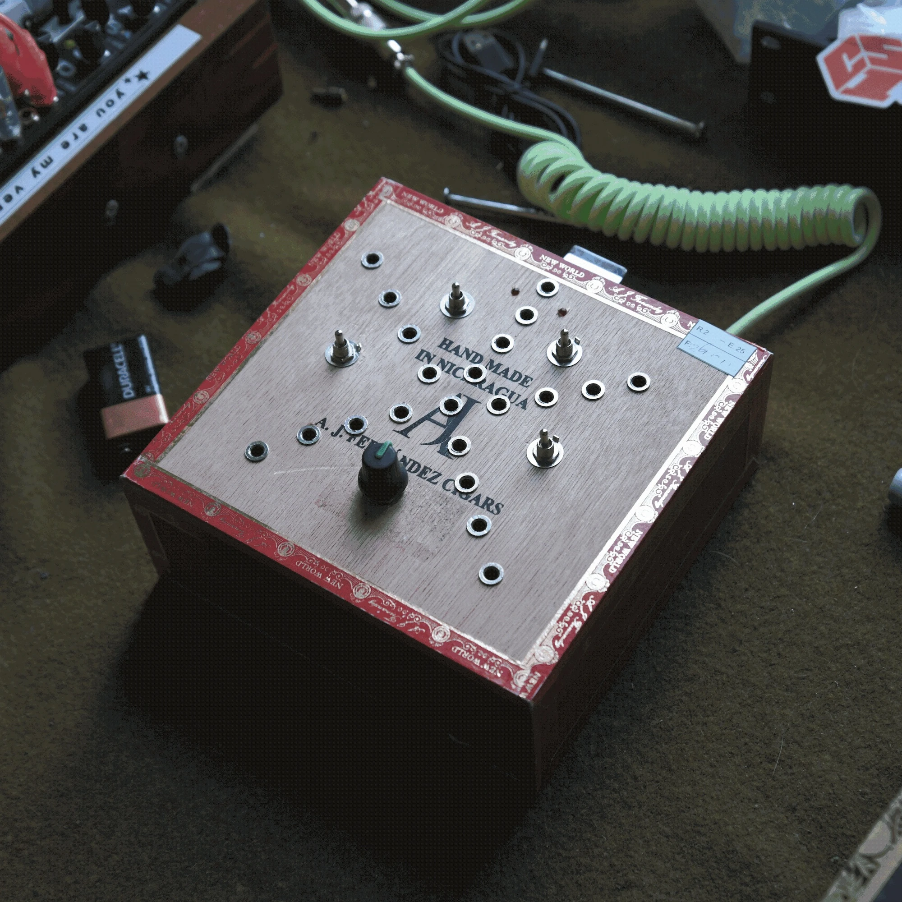
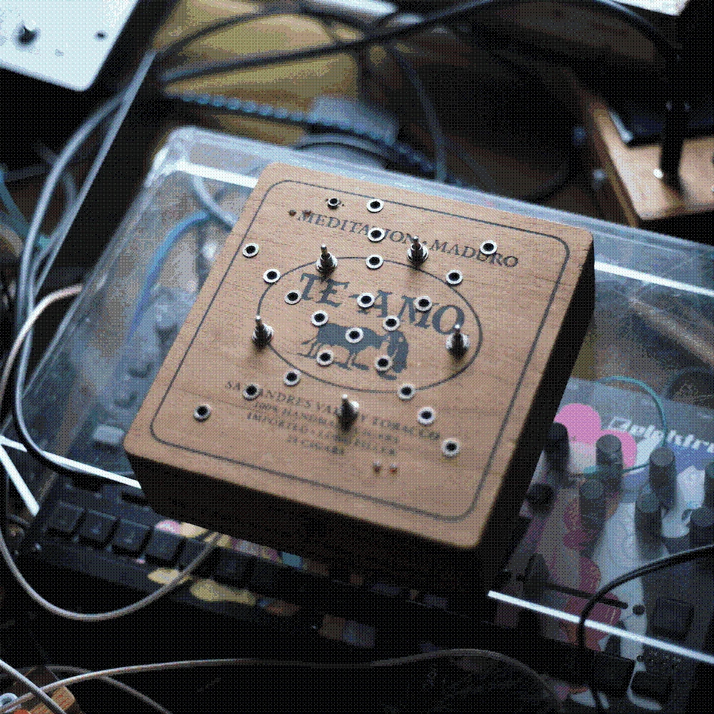
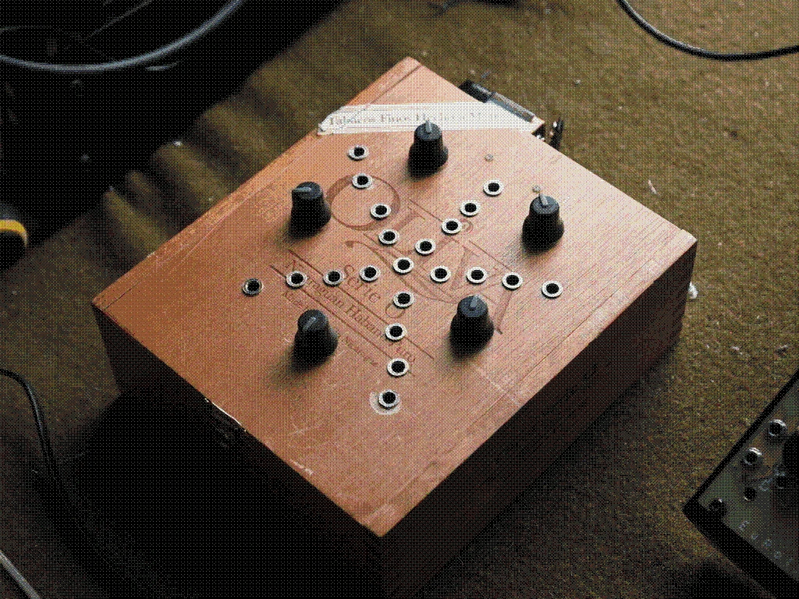
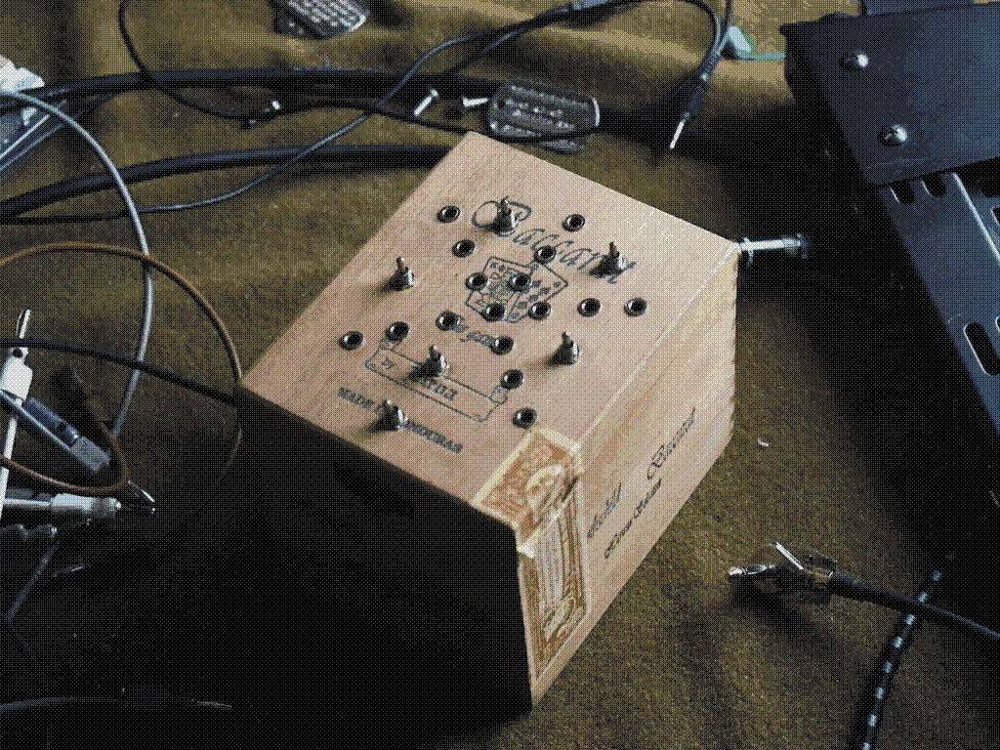
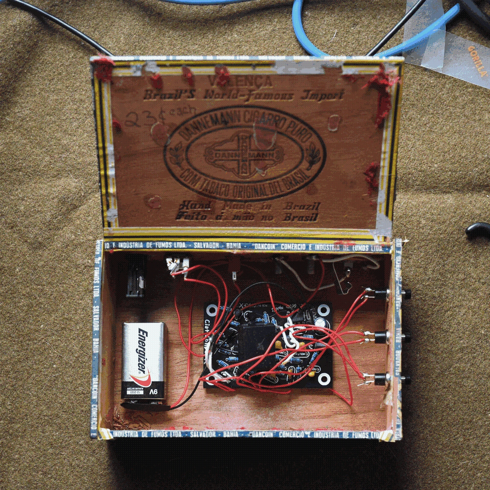
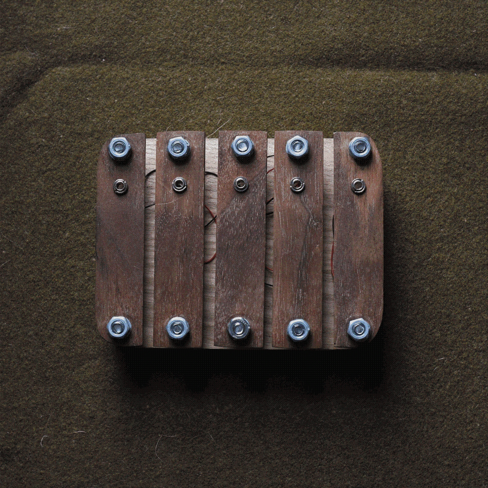
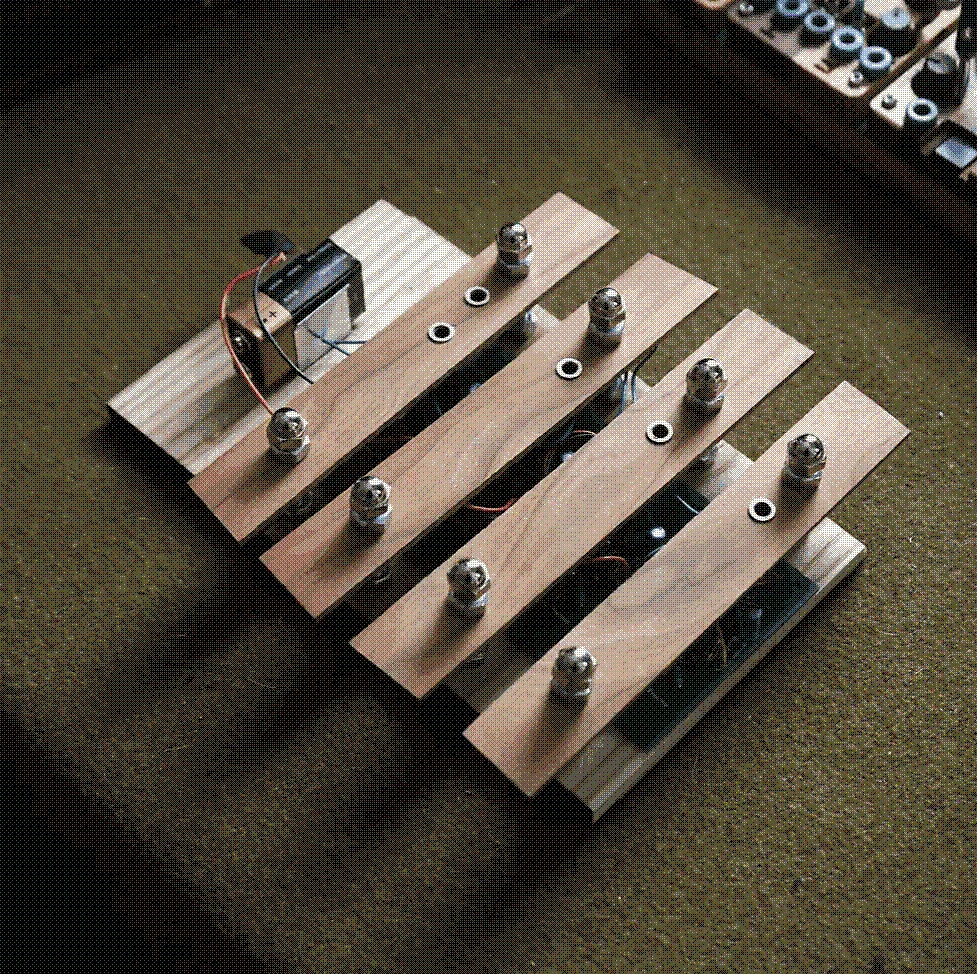
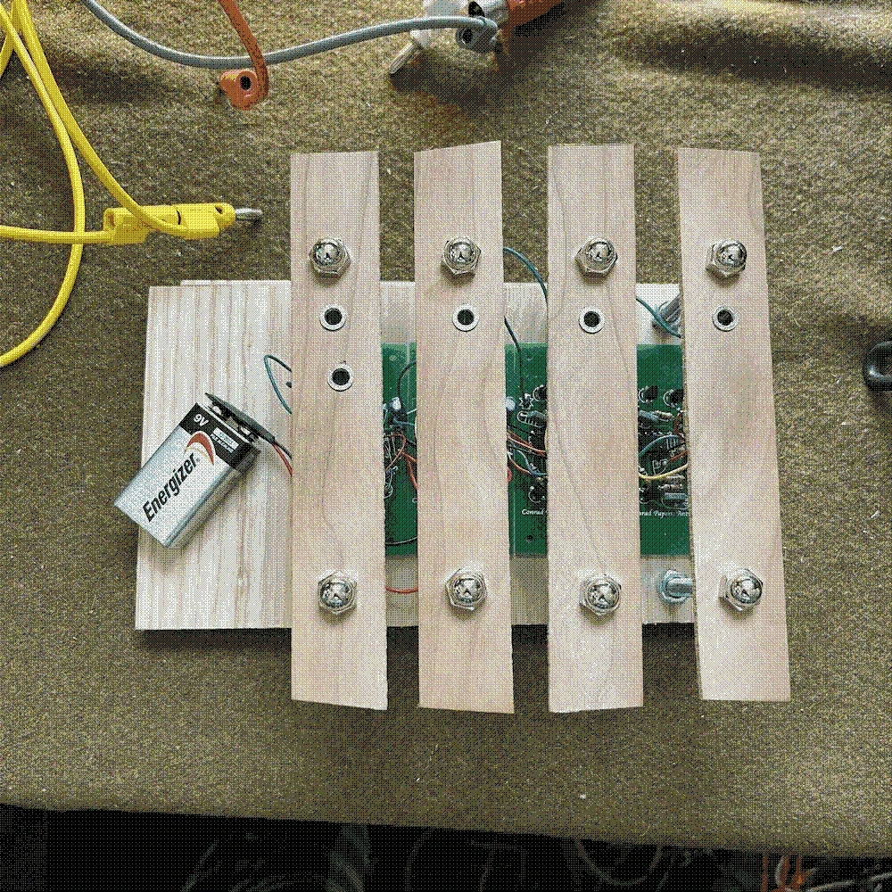
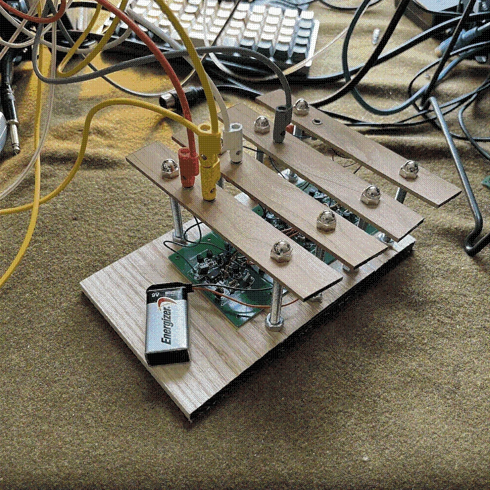

ciat lonbarde builds
 Ciat Lonbarde Gyuto Monks Solar Sounder (circuit bent, for use with UV light/blacklight)

Dogevox: Switched Lil-SidRollz with Rungling and Dogvoice
ciat lonbarde dogvoice
ciat lonbarde lil sidrassi
ciat lonbarde 5 rollz
ciat lonbarde 4 rollz
crucFX rungling
 
 
Various Switched Lil-SidRollz Commissions (Commission me! Shoot me an email at femi.fleming@gmail.com)
$222
Lil sidrolz is a combination of lil Sidrassi with a 3 position switch for each hairy cap and a rolz section with 4 rolz and 6 rolz. Will be built into a similar small form factor cigar box. Please allow 3-6 weeks for build time
ciat lonbarde lil sidrassi
ciat lonbarde 6 rollz (to led)
ciat lonbarde 4 rollz (to led)

Dogevox v2: Switched Lil-Sidrollz with Dogvoice"
ciat lonbarde dogvoice
ciat lonbarde lil sidrassi (12 position rate switches for hairy caps)
ciat lonbarde 6 rollz
ciat lonbarde 4 rollz
ciat lonbarde 3 rollz

Rollz 5: Drum and Drama
x2 ciat lonbarde av dogs
X2 ciat lonbarde gongs
x2 ciat lonbarde ultrasound filters
x2 ciat lonbarde 3 rollz
x2 ciat lonbarde 6 rollz
ciat lonbarde 5 rollz
ciat lonbarde 4 rollz

Gyuto Monks, 9v powered, circuit bent with 3 buttons
ciat lonbarde gyuto monks solar sounder
Barre Controller (euro jacks, passive) for Mobenthey Modules (5 piezos)


Barre Controller (banana jacks, active) for CL gear
x2 ciat lonbarde preamp
x2 ciat lonbarde antipreamp